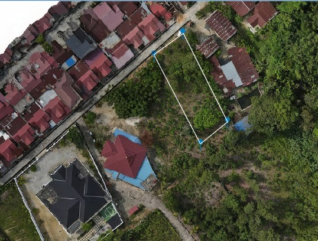

The following are the results of the regional mapping that has been carried out to provide an overview of the location and scope of the mapped area.

Displays areas that have undergone a structured mapping process.
Mapping data is used to determine the condition and characteristics of the area.
The mapping results can serve as a basis for determining further steps and development.